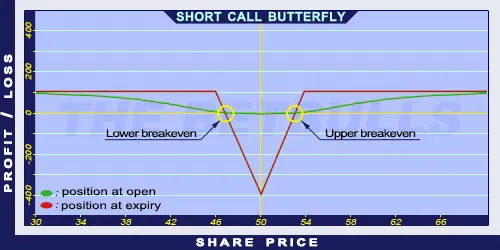

Description and use
Short Call Butterfly is the opposite of Long Call Butterfly strategy. Despite the net credit nature of the investment, it is not popular, because its return is smaller than a Straddle’s or a Strangle’s return. To establish the position, the trader has to sell a lower strike Short Call, buy two middle ATM Long Calls, and sell a higher strike OTM Short Call. The investor can profit from shares with large price fluctuations. The profit is limited, and stable share prices will increase the risk. The direction of the market is neutral. The investor should look for shares with high volatility. The profit is maximised when the share closes at one of the strike prices of the Short Calls. The expiration should be at least three months.
- Type: Neutral
- Transaction type: Credit
- Maximum profit: Limited
- Maximum loss: Limited
- Strategy: Volatility strategy
Opening the Position
Short Call Butterfly Option Positions
- Sell a lower strike (ITM) Call option.
- Buy two middle (ATM) Call options.
- Sell a higher strike (OTM) Call option.
All options must have the same expiration. The difference of consecutive options’ strike prices must be equal. The risk is maximized if the share price is around the middle components’ strike price at expiry.
Steps
Entry:
- Look for shares showing pennant or similar shapes on charts.
Exit:
- The position can be closed only before expiration.
Basic Characteristics
- Maximum loss: Difference between consecutive strike prices - Net credit.
- Maximum profit: Net Credit.
- Time decay: Time usually has a negative effect on the value. However, when the position is making profit, time can have a positive effect as well.
- Lower breakeven point: Lower strike price + Net Credit.
- Upper breakeven point: Higher strike price - Net Credit.
Advantages and Disadvantages
Advantages:
- Limited loss.
- High possible return when share prices moving explosively.
Disadvantages:
- Profit can be increased only if the strike prices are farther from each other.
- Potentially higher profit is only possible close to expiration.
- The potential loss is much larger than the potential profit.
Closing the Position
Buy back the Short Calls and sell the Long Calls.
Mitigation of Losses
Close the position the above-mentioned way.
Example

Short Call Butterfly strategy example with ABCD traded for $50.00 on 17. 05. 2017. The investor engages in the following:
- Sell a Short Call option with a strike price of $45.00, expiring in August 2017, for a premium of $7.98.
- Buy 2 Long Call options with a strike price of $50.00, expiring in August 2017, for a premium of $5.28 each.
- Sell another Short Call option with a strike price of $55.00, expiring in August 2017, for a premium of $3.35.
- Net credit: $0.77
- Maximum loss: $4.23
- Maximum profit: $0.77
- Lower breakeven point: $45.77
- Upper breakeven point: $54.23